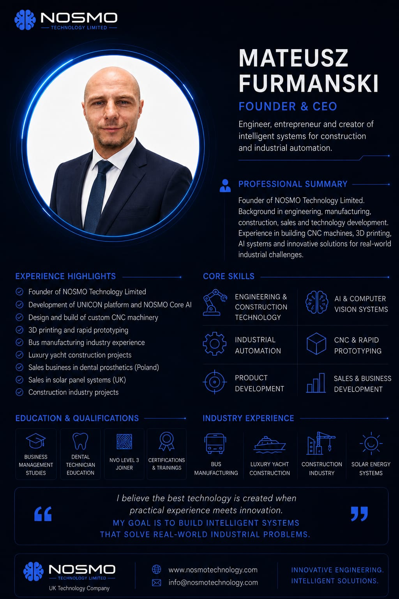
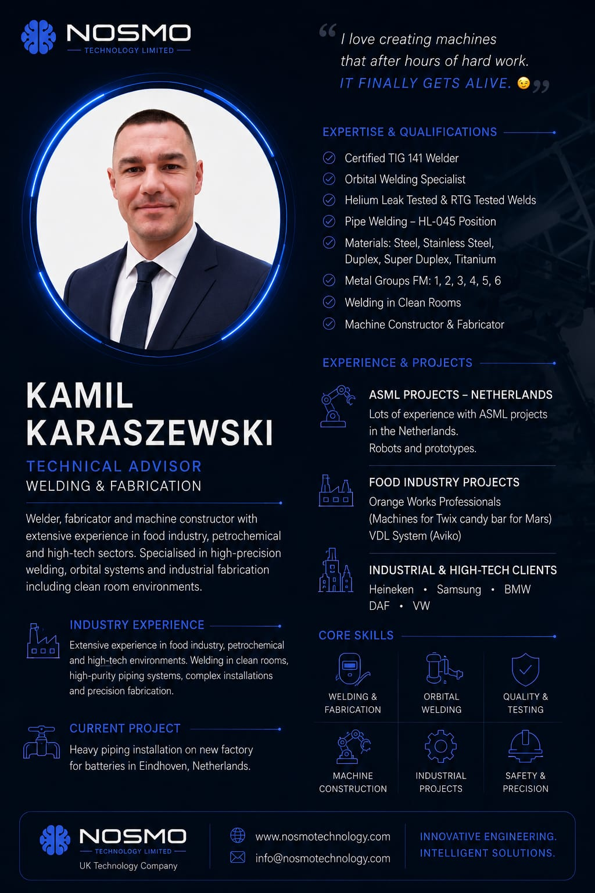
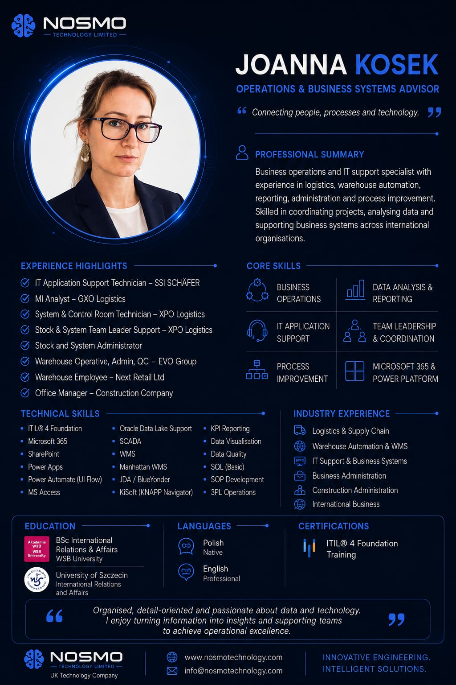

Meet the team
Core people behind NOSMO


PHOTO PLACEHOLDERinsert portrait later
Experience highlights
Machine Service Technician – Viva Polska Serwis
Road Inventory Specialist / Technical Field Support – MAX DROGI CENTRUM
French-speaking Customer Support – Dimar Polska
Production & manufacturing work – Chereau and Lush Manufacturing
Carpentry workshop experience – Bournemouth
Mobile technical work and field operations
NOSMO workshop role
Operate and monitor 3D printers and CNC equipment
Prepare materials, tools and consumables
Support machine setup, daily checks and routine maintenance
Track jobs, print results, issues and maintenance notes
Coordinate suppliers and clients in Polish and French
BARTŁOMIEJ
MEJER
Workshop Operator
CNC, 3D Printing & Recycling Lab
Hands-on workshop operator with experience in machine servicing, production support and practical technical operations.
“Practical workshop discipline, attention to detail and a mindset focused on quality and continuous improvement.”
Professional summary
Practical operator profile built on machine servicing, production support, technical field work and client communication. Experienced in hands-on environments requiring reliability, organisation and problem-solving. Well suited to workshop operations involving CNC, 3D printing, material preparation and recycling processes.
Core skills
CNC / Machine Operation
3D Print Production
Material & Tool Prep
Machine Care & Servicing
Workshop Flow & Logistics
French Client / Supplier Comms
Operational value
Technical mindset with hands-on equipment servicing experience
Workshop organisation, stock control and job preparation
MS Office & CRM for reporting, records and job tracking
Production discipline, routine checks and task follow-through
Fluent spoken French as an advantage for EU partner relations
Workshop strengths
- Reliability and responsibility
- Attention to detail and quality
- Problem-solving and practical thinking
- Strong operational work ethic
Recycling lab support
- Material sorting and preparation
- Recycled material handling
- Waste reduction awareness
- Sustainable workshop practices
Production support
- Machine setup and daily operation
- Support for prototypes and small series
- Quality checks and documentation
- On-time delivery and accuracy